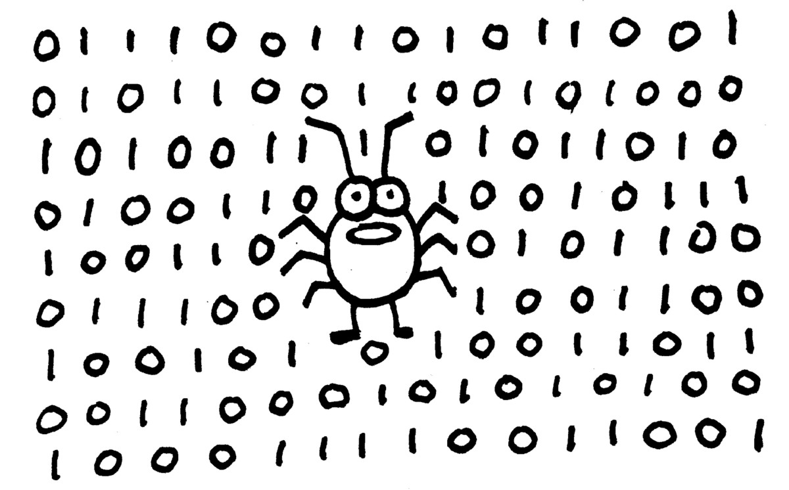
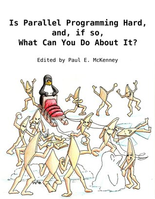

预告：明天 (周一) 下午的课程
举行线上交流/互动活动
- 后半部分在 Zoom 完成；请大家提前安装
- (学校壕，已升级到 Zoom 教育版本)
用来上课，顺便用来开组会 😂
14:00-15:00 期中讲评、反馈、互动
- 正常上课 (bilibili 直播间)
15:00-16:00 Panel Discussion
- (神秘嘉宾 & 助教)
本讲概述
作为上半学期的小结
- 还记得这门课两个视角的操作系统吗？
应用视角
- 操作系统是一组 API
- 复习这组 API, Shell 是最棒的选择 ← 上次课主题
硬件视角
- 操作系统是一个 C 程序 (实现所有 APIs)
- 福利：调试操作系统内核 ← 本次课主题
操作系统 = C 程序
操作系统 = 对象 + API
硬件眼中的操作系统
- 一个程序，管理这些对象、实现这些 API
- “模拟状态机的执行”
- “提供对象操作的代码”
UNIX/Linux 操作系统
- 加载第一个进程 (init)
- 管理 I/O 设备中断
- 执行系统调用
道理很简单，实现不简单
例子: xv6 fork 系统调用导读
fork: 复制进程的地址空间 & 文件描述符的浅拷贝
// Allocate process. if((np = allocproc()) == 0){ return -1; } // Copy process state from proc. if((np->pgdir = copyuvm(curproc->pgdir, curproc->sz)) == 0){ kfree(np->kstack); np->kstack = 0; np->state = UNUSED; return -1; } np->sz = curproc->sz; np->parent = curproc; *np->tf = *curproc->tf; // Clear %eax so that fork returns 0 in the child. np->tf->eax = 0; for(i = 0; i < NOFILE; i++) if(curproc->ofile[i]) np->ofile[i] = filedup(curproc->ofile[i]); ...
虚拟存储的另一个礼物：近乎免费的 fork
之前提到，fork “近乎免费”，但它不是要复制整个状态机吗？
- xv6 里刚看过
copyuvm- 明明是一个一个页面复制的
现代操作系统的实现
- 只读的页面不用复制 (共享)
- 例如代码和只读数据
- 读写的页面需要复制，但不必立即复制
- (数据、堆区、堆栈)
- 只要父子进程暂时不写，就可以当只读数据处理
- 任意一方写入之前复制即可
- (数据、堆区、堆栈)
Copy-on-Write
利用分页机制
- 把读写权限的页面标记为只读
- 写时产生缺页异常，操作系统为写的进程复制页面
Copy-on-Write 的实现
进程可能会 fork 多次
- 我们需要引用计数
页面的 life-cycle
- mmap 映射：不做任何事，等待 page fault
- read page fault 且存在只读的副本：映射；引用计数 + 1
- fork 创建子进程时
- 所有页面的访问权限改为只读 (copy-on-write)
- 所有页面的引用计数 + 1 (可以使用一些数据结构 tricks 加速)
- 所有页面的访问权限改为只读 (copy-on-write)
- write page fault
- 如果引用计数 > 1，复制一份 (可写，引用计数为 1)
- 被复制的页面引用计数 - 1
- unmap (execve/exit) 时
- 引用计数 - 1 (减到 0 时可以归还给 cache/buffer)
Fork: UNIX 给我们的礼物
近乎免费的进程 “快照”
F. Qin, et al. Rx: Treating bugs as allergies--A safe method to survive software failures. In Proc. of SOSP, 2005.
- 程序有 bug 找不到怎么办？
- 定期打上快照 (fork)，fail 了就把执行环境改改再试，好了就继续吧
- 程序有 bug 找不到怎么办？

我们也在用 fork 快照做很好玩的工作
- 这就是 system 的魔法！ ← 签订契约，成为魔法少女
- (再次暗示；以及：这是什么梗)
现实很丰满，理想很骨感
如果真要让你实现一个这玩意，估计会调试到死。
- 你一定体会到被 L1/L2 支配的恐惧了

再一次遇见调试理论
Fault, Error 和 Failure: 复习
想调试操作系统内核？

开始 debug (failure → fault) 的旅程
- 首先，你要能稳定地重现 failure
- 尽可能把 failure 定位到代码的某一部分
Fault → Error: 测试
一些基础类型的线程
void producer() { while (1) { P(&empty); _putc('('); V(&fill); } } void consumer() { while (1) { P(&fill); _putc(')'); V(&emtpy); } } void printer() { tid++; while (1) { printf("%d", tid); } } void yielder() { while (1) _yield(); }
和各种复杂情况的组合
- 线程类型的组合 (
[[]]]]; [[[]py; pppyyyp...) - 在线程运行过程中插入 lock/unlock/P/V
- 在几个关键点插入 delay
Small Scope Hypothesis. A high proportion of bugs can be found by testing the program for all test inputs within some small scope.
- 我们的另一个解读：“任何人类能理解的 bug, 都能存在一种简单的方式描述出来” → 所以 “测试” 就是枚举这种简单的描述 🤔
Error → Failure: 检查
操作系统内核的特殊性
- C 语言产生 UB 后可能会发生 memory corruption
- 引发任意严重的后果……
- 神秘重启……
- 至今所有同学都卡在 CPU Reset 了哈哈哈哈哈哈
- kasan 是个非常有效的 bug 检测工具
- 但实现 kasan 太困难了？怎么办？
你其实知道每一个 field 的 data type!
- 任何内存都可以是 canary!
出问题的时候及时预警 (把 error 尽早变成 failure, 而不是等到神秘重启)
assert(IN_RANGE(ctx->rip, RANGE(0x100000, &etext)))- small integer →
assert(n <= 100) - (试试 xv6 的
struct proc)
调试 Memory Corruption
体验极差！因为同一个 bug 的 failure 每次都不一样
- 怎么办？？
使用 watch point!
- 你们终于知道 NEMU PA 的良苦用心了吧！
- 你还记我们上次用 watch point 是做什么的？
背后的逻辑很简单
- 一定有人 (指令) corrupt 了那个内存
- 找到那条指令就能定位到 corruption
- 如果你能找到一个 “被 corrupt” 的内存
- 加一个 watch point
- 顺藤摸瓜找到谁是最先 corrupt 内存的
福利 (1): Lab 1 性能诊断
一个有趣的性能 Bug
一个有趣的性能问题 (导致 < 1Mops)
- 你能看出来吗？
union slab { struct { cpu_t *owner; struct bitmap bitmap; ... }; uint8_t data[SLAB_SIZE]; }; void slab_free(void *ptr) { union slab *slab = (void *)ROUNDDOWN(ptr, SLAB_SIZE); spin_lock(&slab->owner->lock); ... }
如何找到这个 Bug?
首先，你必须触发它
- 触发条件：一个处理器上分配、另一个处理器上 free
- 如何构造这样的 workload?
然后你需要一个性能诊断工具
- 你只是单纯地想知道 “哪部分代码用了最多的时间”
- 还记的 sperf 吗？
正确的打开方式：使用 Profiler

定时对程序进程采样，供后续性能分析
- 记录:
perf record --call-graph dwarf [command] - 检查:
perf report
福利 (2): Lab 2 的隐形 Bug
一个事实
我理解你们有巨大的惰性就想着用 printf 和乱改代码调试
- 极少数的人能成功
- 大部分人最后的结果就是放弃
Get out of your comfort zone!
你们到我这个年龄，突破自我就越来越难了……
- 每天都在教学事故 (备不完课) 的边缘徘徊 😂
绝对值得的工具，无论你感到多恐惧
- 用 gdb 调试 QEMU
- 参考往期视频
- 寄存器 dump 和 back trace
- 参考 xv6
- 用 gdb 调试 QEMU
Lab2: 一个令人智熄的 Bug
出现在把线程 schedule 到其他 core 上
- 如果进行处理器 “绑定” (像 thread-os-mp.c 那样)
- 没问题
- 压力测试全对
- 一旦允许跨处理器调度就
- PC 指针进入诡异位置
- crash, 神秘重启, ...
- 无理由的死锁
- PC 指针进入诡异位置
复习：调试理论
Bug 为什么难找？
- Fault → Error → Failure
- 这个 failure 一点头绪都没有，就是个莫名其妙的神秘重启/出错
- 每次还都不一样
- 有时候删掉 printf 就没了
但这个例子很好调 😃 看看哪里发生了异常
- Triple fault 会导致重启
- 一般是
#GP(13) 或者#PF(14)- ✅ 你们可以在 CTE 中捕获这些问题 (但不解决所有问题)
- ✅ QEMU 提供了
-d和-D选项
画个状态机！
_Context *on_interrupt(_Event ev, _Context *ctx) { lock(); // BIG LOCK ... if (current != IDLE) current->cpu = (current->cpu + 1) % ncpu; next = IDLE; for (int n = ntask; n; n--) { if (tasks[CPU->i].cpu == _cpu()) { next = &tasks[CPU->i]; break; } } current = next; unlock(); return next->context; }
所有共享数据看起来都有原子性
- 但恰恰有一个你没考虑到的情况 (very subtle)
如何修复？
你会得到一个非常像 Read-Copy-Update (RCU) 的 solution
- 留给大家的礼物 😓 (
同学们：才不想要这个礼物呢)

在 Linux Kernel 会频繁地看到 rcu_xxx
- 就是这个 RCU
- Further reading: P. E. McKenny (Ed.). Is Parallel Programming Hard, And, If So, What Can You Do About It?, 2019.
- 大佬是 RCU 的作者 (发明人)
- 一本非常 modern 的教科书
- 去追求 non-trivial 的东西
Takeaways and Wrap-up
这里总结了课程的前半部分！
- (应用视角) 用户 → I/O 设备 → shell/应用程序 → 操作系统 API
- (机器视角) 操作系统 API ← C Runtime, I/O, 中断 ← 指令 ← 机器
调试操作系统内核：调试理论
- Fault → Error → Failure
- 调试的本质：检查执行 trace，找到和预期不符的地方
- 调试操作系统内核的诀窍
- 做好测试 (fault → error)
- 做好检查 (error → failure)
- 做好隔离 (缩短 trace)
复习题
- RTFM & RTFSC (xv6)
- happy hacking (L1 & L2)!